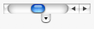

| Version: 2.9.4 |
#include </home/zeitlin/src/wx/github/interface/wx/scrolbar.h>
 Inheritance diagram for wxScrollBar:
Inheritance diagram for wxScrollBar:A wxScrollBar is a control that represents a horizontal or vertical scrollbar.
It is distinct from the two scrollbars that some windows provide automatically, but the two types of scrollbar share the way events are received.
This class supports the following styles:
The following event handler macros redirect the events to member function handlers 'func' with prototypes like:
Event macros for events emitted by this class:
wxEVT_SCROLL_TOP scroll-to-top events (minimum position). wxEVT_SCROLL_BOTTOM scroll-to-bottom events (maximum position). wxEVT_SCROLL_LINEUP line up events. wxEVT_SCROLL_LINEDOWN line down events. wxEVT_SCROLL_PAGEUP page up events. wxEVT_SCROLL_PAGEDOWN page down events. wxEVT_SCROLL_THUMBTRACK thumbtrack events (frequent events sent as the user drags the thumbtrack). wxEVT_SCROLL_THUMBRELEASE thumb release events. wxEVT_SCROLL_CHANGED end of scrolling events (MSW only). wxEVT_SCROLL_TOP scroll-to-top events (minimum position). wxEVT_SCROLL_BOTTOM scroll-to-bottom events (maximum position). wxEVT_SCROLL_LINEUP line up events. wxEVT_SCROLL_LINEDOWN line down events. wxEVT_SCROLL_PAGEUP page up events. wxEVT_SCROLL_PAGEDOWN page down events. wxEVT_SCROLL_THUMBTRACK thumbtrack events (frequent events sent as the user drags the thumbtrack). wxEVT_SCROLL_THUMBRELEASE thumb release events. wxEVT_SCROLL_CHANGED end of scrolling events (MSW only). The EVT_SCROLL_THUMBRELEASE event is only emitted when actually dragging the thumb using the mouse and releasing it (This EVT_SCROLL_THUMBRELEASE event is also followed by an EVT_SCROLL_CHANGED event).
The EVT_SCROLL_CHANGED event also occurs when using the keyboard to change the thumb position, and when clicking next to the thumb (In all these cases the EVT_SCROLL_THUMBRELEASE event does not happen).
In short, the EVT_SCROLL_CHANGED event is triggered when scrolling/moving has finished independently of the way it had started. Please see the widgets sample ("Slider" page) to see the difference between EVT_SCROLL_THUMBRELEASE and EVT_SCROLL_CHANGED in action.
 |  |  |
| wxMSW appearance | wxGTK appearance | wxMac appearance |
Public Member Functions | |
| wxScrollBar () | |
| Default constructor. | |
| wxScrollBar (wxWindow *parent, wxWindowID id, const wxPoint &pos=wxDefaultPosition, const wxSize &size=wxDefaultSize, long style=wxSB_HORIZONTAL, const wxValidator &validator=wxDefaultValidator, const wxString &name=wxScrollBarNameStr) | |
| Constructor, creating and showing a scrollbar. | |
| virtual | ~wxScrollBar () |
| Destructor, destroying the scrollbar. | |
| bool | Create (wxWindow *parent, wxWindowID id, const wxPoint &pos=wxDefaultPosition, const wxSize &size=wxDefaultSize, long style=wxSB_HORIZONTAL, const wxValidator &validator=wxDefaultValidator, const wxString &name=wxScrollBarNameStr) |
| Scrollbar creation function called by the scrollbar constructor. | |
| virtual int | GetPageSize () const |
| Returns the page size of the scrollbar. | |
| virtual int | GetRange () const |
| Returns the length of the scrollbar. | |
| virtual int | GetThumbPosition () const |
| Returns the current position of the scrollbar thumb. | |
| virtual int | GetThumbSize () const |
| Returns the thumb or 'view' size. | |
| virtual void | SetScrollbar (int position, int thumbSize, int range, int pageSize, bool refresh=true) |
| Sets the scrollbar properties. | |
| virtual void | SetThumbPosition (int viewStart) |
| Sets the position of the scrollbar. | |
| bool | IsVertical () const |
| Returns true for scrollbars that have the vertical style set. | |
| wxScrollBar::wxScrollBar | ( | ) |
Default constructor.
| wxScrollBar::wxScrollBar | ( | wxWindow * | parent, |
| wxWindowID | id, | ||
| const wxPoint & | pos = wxDefaultPosition, |
||
| const wxSize & | size = wxDefaultSize, |
||
| long | style = wxSB_HORIZONTAL, |
||
| const wxValidator & | validator = wxDefaultValidator, |
||
| const wxString & | name = wxScrollBarNameStr |
||
| ) |
Constructor, creating and showing a scrollbar.
| parent | Parent window. Must be non-NULL. |
| id | Window identifier. The value wxID_ANY indicates a default value. |
| pos | Window position. If wxDefaultPosition is specified then a default position is chosen. |
| size | Window size. If wxDefaultSize is specified then a default size is chosen. |
| style | Window style. See wxScrollBar. |
| validator | Window validator. |
| name | Window name. |
| virtual wxScrollBar::~wxScrollBar | ( | ) | [virtual] |
Destructor, destroying the scrollbar.
| bool wxScrollBar::Create | ( | wxWindow * | parent, |
| wxWindowID | id, | ||
| const wxPoint & | pos = wxDefaultPosition, |
||
| const wxSize & | size = wxDefaultSize, |
||
| long | style = wxSB_HORIZONTAL, |
||
| const wxValidator & | validator = wxDefaultValidator, |
||
| const wxString & | name = wxScrollBarNameStr |
||
| ) |
Scrollbar creation function called by the scrollbar constructor.
See wxScrollBar() for details.
Reimplemented from wxControl.
| virtual int wxScrollBar::GetPageSize | ( | ) | const [virtual] |
Returns the page size of the scrollbar.
This is the number of scroll units that will be scrolled when the user pages up or down. Often it is the same as the thumb size.
| virtual int wxScrollBar::GetRange | ( | ) | const [virtual] |
Returns the length of the scrollbar.
| virtual int wxScrollBar::GetThumbPosition | ( | ) | const [virtual] |
Returns the current position of the scrollbar thumb.
| virtual int wxScrollBar::GetThumbSize | ( | ) | const [virtual] |
Returns the thumb or 'view' size.
| bool wxScrollBar::IsVertical | ( | ) | const |
Returns true for scrollbars that have the vertical style set.
| virtual void wxScrollBar::SetScrollbar | ( | int | position, |
| int | thumbSize, | ||
| int | range, | ||
| int | pageSize, | ||
| bool | refresh = true |
||
| ) | [virtual] |
Sets the scrollbar properties.
| position | The position of the scrollbar in scroll units. |
| thumbSize | The size of the thumb, or visible portion of the scrollbar, in scroll units. |
| range | The maximum position of the scrollbar. |
| pageSize | The size of the page size in scroll units. This is the number of units the scrollbar will scroll when it is paged up or down. Often it is the same as the thumb size. |
| refresh | true to redraw the scrollbar, false otherwise. |
scrollbar->SetScrollbar(0, 16, 50, 15);
Reimplemented from wxWindow.
| virtual void wxScrollBar::SetThumbPosition | ( | int | viewStart | ) | [virtual] |
Sets the position of the scrollbar.
| viewStart | The position of the scrollbar thumb. |